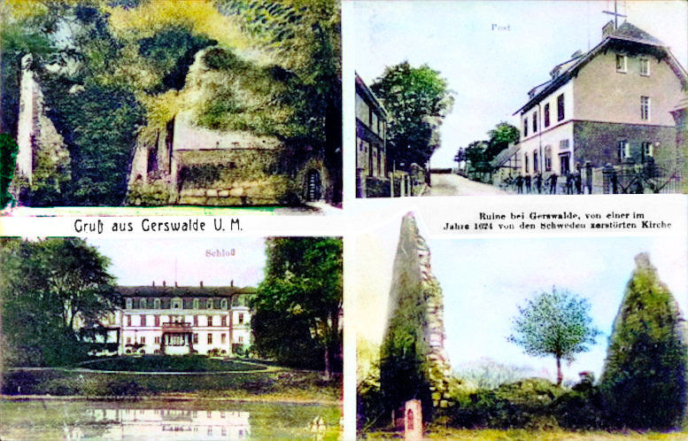
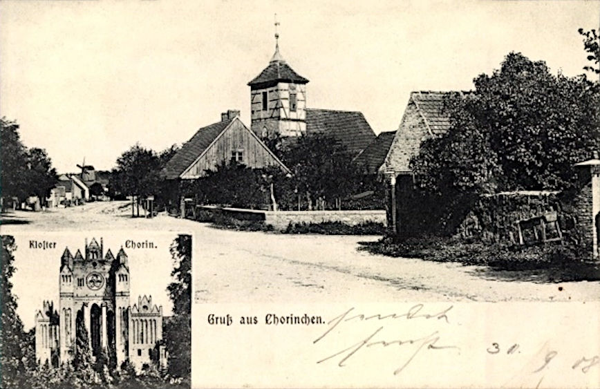
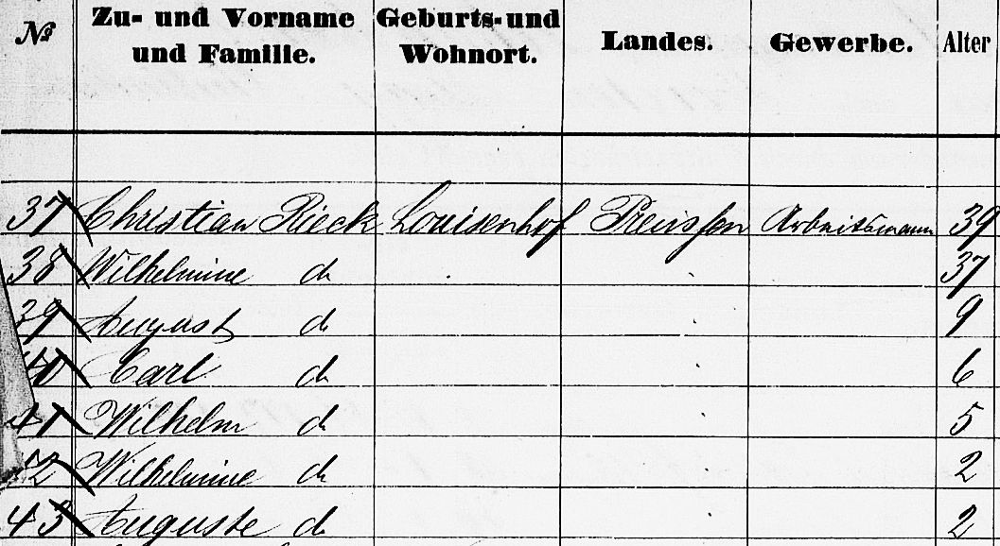

-

An old postcard with Greetings from Gerswalde, Uckermark
19th century composite map of the Gerswalde area showing locations of the Riek and Rieck families. The distance from Ringenwalde (bottom-left) to Potzlow (top-right) is about 20km.
1820 Marriage of Johanna Riek and Johann Dickfos in Fergitz
Riek and Rieck
(both pronounced like 'reek' in English)
Prior to their migration to Queensland in the latter half of the 19th century, the Riek and Rieck families hailed from Gerswalde district in the Uckermark region of Prussia. Why it was that the names of the two families were spelt differently is a puzzle but it's worth noting that at that time Germany was going through a massive language reform with the aim of producing a uniform spelling and pronunciation for all words including names.
One of those changes was to convert a name like Riek into Rieck. Indeed some of the family were born with the name Riek but later in Australia went under the name Rieck and sometimes back again. The German pronunciation is quite different from the English and some even changed the spelling to Reick, in an attempt to seem more comprehensible.
It's also interesting that the records before about 1855 had the names spelt as Riek, while those after that date were written down as Rieck. Yet there is also the possibility that the Rieks and Riecks were two distinct families and not originally related. All that changed in the new country, at least by marriage, as some of them and their descendants married into our family.c.1825 map of Gerswalde with Herrenstein to the west
Migrations
There were at least two families by the name of Riek or Rieck who migrated from the Gerswalde district in the Uckermark to Queensland. These families are outlined in greater detail further below.
The family of » Riek, Martin Christian Friedrich (1826-1901)
born Gerswalde, died Fernvale, migrated on the Helene
(dep. Hamburg 8 Apr 1865, arr. Moreton Bay 2 Aug 1865)
with wife Dorothea and two children, Wilhelmine(13) and Wilhelm(11)
The family of » Riek, Carl Christian Friedrich (1824-1909)
born Fergitz, died Kalbar, migrated on the Johan Cesar
(dep. Hamburg 19 Nov 1863, arr. Moreton Bay 28 Apr 1864)
with wife Wilhelmine and five children, August(9), Carl(6), Wilhelm(5), Wilhelmine(2), Auguste(2)
There was also the family of Johanne Friederike Riek (1818-1844) b.Strowig in Potzlow, out of wedlock, who was married in 1841 in Fergitz, to Johann Christian Friedrich Dickfoss (1816-1894) b.Gerswalde d.Mt.Walker. Their son, Johann Friedrich August Dickfos (1842-1926) b.Gerswalde d.Ipswich was married in 1819 to Christine Sophie Schneider (1843-1917) b.Eberstadt d.Coleyville. Christine Sophie was the sister to our 2x great-grandfather, Henry Schneider (sen.).
1820 Marriage of Ludwig and Dorothee
The farmhand, Carl Ludwig Riek, of Kaakstedt, eldest legitimate son of the worker in that place, Daniel Riek, was with his bride Marie Christine Schröder of Kaakstedt, 2nd daughter of local worker Michael Schröder, after proclaiming the Banns on the 19th 20th and 21st after Trig., married on the 29th of October at home, because the bride who had just given birth could not go to the church.Carl Ludwig Riek
and Dorothee Marie Christina Schroeder
Our 3x great-grandparents Carl Ludwig Riek, known as Ludwig, and his wife Dorothee Marie Christina Schroeder, both born in Kaakstedt, were registered as married in 1820 in nearby Gerswalde, although the ceremony itself very likely took place in Kaakstedt. All in all they had eight children but it seems that only their fourth son, » Martin Christian Friedrich, known later as Fred, migrated to Australia with his family. As far as we know, very many stayed close to home in the Gerswalde district.
That family consisted of Fred, his wife Dorothea and their only two children, Wilhelmine (who became our 2x great-grandmother) and her younger brother, Wilhelm.The exterior and interior of the village church in Kaakstedt (Dorfkirche Kaakstedt) dating from the 13th century
» Carl Ludwig Riek (1799–1853)
married Dorothee Marie Christina Schroeder (1800–1858) in Gerswalde, Uckermark, 29.10.1820and they had the following children:
Carl August Riek 20.10.1820 –
*Gerswalde05.10.1887
†Gerswaldestatus unknown Christian Friedrich Riek ??.??.1822 –
*Gerswalde14.04.1866
†Gerswaldem. Caroline Friederike Wilhelmine Dorothee Schmidt in Hassleben, 19.12.1852
m. Dorothea Wilhelmine Bechly in Gerswalde, 08.11.1857Michael Friedrich Riek 17.01.1825 –
*Gerswaldeunknown
†unknownstatus unknown Martin Christian Friedrich Riek 23.03.1826 –
*Gerswalde13.08.1901
†Fernvalem. Dorothea Louise Spann in Gerswalde, 27.10.1850 Carl Friedrich Wilhelm Riek 25.10.1828 –
*Gerswaldeunknown
†unknownstatus unknown Wilhelm Friedrich Riek 24.09.1832 –
*Gerswaldeunknown
†unknownm. Christine Louise Pieper in Gerswalde, 24.10.1858 Louise Wilhelmine Christine Riek 14.08.1835 –
*Gerswaldeunknown
†unknownm. Ferdinand David August Kruger in Gerswalde, 14.11.1858 Wilhelmine Dorothee Christine Riek 25.06.1838 –
*Gerswaldeunknown
†unknownm. Karl Friederich Knitter in Gerswalde, 14.10.1860
1850 Marriage of Friedrich and Dorothea in Gerswalde
TRANSLATION: The bachelor Christian Friederich Riek, worker in Gerswalde, legitimate son of the local worker Ludwig Riek, married his fiancée Dorothee Louise Spann from Hahnwerder, legitimate daughter of the worker from there, Martin Spann, after three announcements of the Banns, on the 27th October 1850.Potzlow (from an old postcard)
1865 The Riek family on board the Helene
Martin Christian Friedrich Riek
and Dorothea Louise Spann
Our 3x great-grandparents Martin Christian Friedrich Riek, known as Friedrich or Fred, and his wife Dorothea Louise Spann left Hamburg on the 8th of April 1865 and arrived in Moreton Bay 2 August 1865. Along with them were their two children, 13 year old Johanne Wilhelmine Emilie and 11 year old Wilhelm Friedrich. Accompanying them also, was Dorothea's younger brother, Christian Spann, his wife Johanne and their three children, Wilhelm (13), Albertine (9) and Auguste (5).
Dorothea was born in Ringenwalde, about 12km south of Gerswalde but Friedrich and daughter Johanne were both born in Gerswalde itself. The younger son, Wilhelm, was born in Potzlow, about 6km north-east of Gerswalde. On the ship's records 11 years later, Potzlow was recorded as their place of abode, so it seems they were living in Potzlow for at least 11 years up until their migration. Friedrich and his daughter were both born in Gerswalde but his wife Dorothea was born in Ringenwalde, about 12km south of Gerswalde. Their son Wilhelm was born in Potzlow, 6km northeast of Gerswalde. Potzlow is also the name of the place on the ship's records as their last place of abode. So it seems they were living in Potzlow for 11 or 12 years up until their migration.
When they migrated in 1865, they left behind quite a large number of close family members, both as Rieks and Spanns who continued to inter-marry in and around Gerswalde much the same as occurred in Queensland once they had dispersed and re-established themselves in various districts. » Martin Christian Friedrich Riek (1826–1901)
» Martin Christian Friedrich Riek (1826–1901)
married Dorothea Louise Spann (1824–1905) in Gerswalde, Templin, Brandenburg, Germany, 27.10.1850and they had the following children:
Wilhelmine Riek 15.02.1852 –
*Gerswalde07.07.1906
†Qldm. Friedrich Suchting in Ipswich, 27.05.1870 Wilhelm Frederick Rieck 03.11.1853 –
*Potzlow13.05.1911
†Blantyrem. Louise Wilhelmine Rossow in Walloon, 21.09.1877 c.1888 Wilhelmina Riek with her husband Friedrich Suchting and their younger children, Alvina(4), Martha(6) and Alfred(2).
Fred Riek's selection of land at Vernor. Also shown are the Spann and Pieper selections.
Life in Queensland
In Queensland, Fred Riek selected land at Vernor, 2km from Fernvale, bordering on Johann George Spann's property. Fred's daughter, Wilhelmine married Friederich Suchting and they also settled in Vernor. Fred's son Wilhelm on the other hand selected land at Anthony, 60km south of Fernvale, where he established a farm. He also selected near there at Blantyre, on the corner of the Harrisville and Coochin roads where he ran a general store.
At a Fernvale meeting on February 26, 1886, with the chair occupied by Captain Vernor himself, Fred Riek proposed "that the land fronting the railway line, and along Glamorgan Vale road be cut up into township allotments". Mr. Ludwig seconded the proposal. Also proposed and seconded at the same meeting was that ten acres should be set aside for a general cemetery to be called The Fernvale Cemetery. A further three or four acres were proposed for a school of arts and farmer's club and whatever the government deems fit for a Police Barracks near the railway station.In 1890 William was already holding a concert and ball at his store in Blantyre. » The local brass band mentioned here is very likely the one pictured further below.
Blantyre State School in 1903
On the 9th of November 1894, William's daughter, Dora, performed at the Blantyre State School concert.
In 1896 William applied for permission to sell wine at his store in Blantyre. The neighbour mentioned here, Charles Rossow, was William's brother-in-law.
William was also active in local affairs. In 1897, he established a debating group, having gratuitously provided his barn to provide room for the first class to take place. Their first debate was "Were the Government justified in taxing tobacco growers?", for which, after a lengthy discussion the negative was carried.
Mr. R. W. Whitehill in his Secretary's Report for the raising of money for the Ipswich General Hospital stated that Mr. Leekey had visited the Roadvale, Engelsburg, Blantyre, Rosevale, Coleyville, Mount Walker and Ebenezer districts and had had a very successful trip. Mr. Leekey stated that he had received every kindness and had been entertained free of charge by (among others) Mr. Riek at Anthony, Mr. Lobegeiger at Coleyville, Mr. H. Dickfos at Roadvale and so on. Mr. Leekey's expenses for the fortnight were 3 shillings, he having to pay nothing beforehand. During his trip Mr. Leekey had collected £373 18s 9d, an announcement which was greeted with applause.
The two eldest children of William and Minnie, Alvina and Mildred married the Draheim brothers in 1898 and 1900 respectively. The next youngest, Mary, married Fred Gessler in 1905. The eldest son of William and Minnie, William Charles, eventually followed suit and married Bertha Holz in 1906. Over the course of the next few years, the three youngest children were also married, Dora to John Shaw in 1911, Arthur to Effie Smith in 1916 and finally Estelle to John Daniel in 1924.
William's father, Fred, passed away in 1901, his mother, Dorothea, in 1905 and his only sibling, Wilhelmine, in 1906. William followed not long after and passed away at Anthony in 1911. William's wife Minnie, naturally enough filed for Probate. When Minnie herself passed away in 1923 in Pittsworth at the residence of her youngest daughter, Stella, the eldest son William Charles filed for Probate on September 8, 1923 but two weeks later, he also passed away. His widow, Bertha, was the next in the chain, filing for Probate a few days afterwards in October 1923.
The Engelsburg Baptist Church Band, Kalbar, 1907-1914
The group members including Henry Moller on the stairs and standing from left to right are
the drummer August Rieck, Fred Moller, Pastor Windolf, ?, August Stibbe, August Muller, Henry Muller, Charles Muller and Jack Rieck.
Seated are Harry Stibbe, Ferdinand Kruger, Bill Topp and Joe Muller. (QldPics)
The Riecks at each end of the group are probably the eldest and youngest sons of Carl Christian Friedrich Rieck (see below).
An old postcard with Greetings from Chorinchen which also shows Chorin Abbey (Kloster). Chorinchen was renamed to Chorin in 1934 and is about 30km south of Gerswalde.
1853 Marriage of Carl Christian Riek and Wilhelmine Grothe
1. Louisenhof. The bachelor and farmhand Carl Christian Riek from Chorinchen near Neustadt, the only legitimate son of Christoph Riek of Potzlow, together with his fiancée the spinster Friederike Wilhelmine Grothe from Louisenhof, the eldest legitimate daughter of the worker Christian Grothe, were married on the 13th of November 1853.
(Note: Neustadt is now known as Eberswalde)The Rieck family on board the Johan Cesar
An old map of the Gerswalde district showing Louisenhof near Friedenfelde, where Christian and Wilhelmine were married. Gerswalde itself and Louisenhof, were both »Vorwerke belonging to the von Arnim family.
Carl Christian Friedrich Rieck
and Wilhelmine Grothe
The above mentioned Riek families were preceded by Carl Christian Friedrich Rieck, known as Christian, his wife Wilhelmine (Minna) Grothe and their children, August (9), Carl (6), Wilhelm (5) and the 2 year old twins, Wilhelmine and Auguste. They departed Hamburg on the 19th of November 1863 and after an exceptionally long, dangerous and distressful trip, arrived in Moreton Bay six months later on the 17th of May 1864.
William Rieck, grandson of Christian and Wilhelmine, son of Wilhelm and Rosine Schneider, on his wedding day with his bride Margaret Gilloway, 1925

Auguste Christine Wolter, granddaughter of Christian and Wilhelmine, daughter of Wilhelmine Auguste Rieck and Carl Wolter, on her wedding day with her groom Henry Krueger, 1917
From the Uckermark
Christian was born in 1824 in Fergitz near Potzlow and in 1853 he married Wilhelmine in Louisenhof. At that time he was recorded as being from Chorinchen, now known as Chorin named after the Cistercian Chorin Abbey founded there in 1258.
Mutdapilly and Engelsburg
Christian and Wilhelmine's son, Wilhelm Christian Friedrich, who was only five years old when he arrived in Australia eventually married the half-sister of Henry Schneider junior, Rosine Sophie, in 1882 at Harrisville. Their daughter Amelia Rieck married Friedrich Wilhelm (Fred) Schneider, the son of Henry's uncle Friedrich Gottfried (Fred) Schneider. Rosine and Wilhelm's son, William, pictured to the left, married Margaret Gilloway in 1925.
According to the Obituary of William (senior) in 1936, his parents, Christian and Wilhelmine, first settled the family at Mutdapilly and then moved to Engelsburg, which was later called Kalbar. Maps of the locations of their lands are shown below.
Engelsburg Cricket Club
On the 22nd of June 1897, the Engelsburg Cricket Club, known as the "Burgs", held a dinner and smoke concert to celebrate the end of the season whereby thanks were expressed to Mr. Rieck for granting permission to the club to use his land as a cricket ground. It was not stated whether it was referring to Christian who was 72 at the time or his son August, who was 42, since their lands bordered on each other at Engelsburg.
» Carl Christian Friedrich Rieck (1824–1909)
married Wilhelmine Grothe (1826–1886) in Friedenfelde, Templin, Brandenburg, Germany, 11.11.1853and they had the following children:
August Christian Frederick Rieck 09.08.1854 –
*Kelpin08.11.1932
†Kalbarm. Marie Elisabeth Henrietta Henrichsen in Qld, 21.03.1878
m. Marie Alwine Augusta Profke in Qld, 07.06.1899Carl Christian Friedrich Rieck 01.03.1857 –
*Friedenfelde15.01.1931
†Brisbanem. Auguste Johanne Caroline Rieck in Qld, 12.06.1879
m. Wilhelmine Anna Zollner in Qld, 23.10.1908Wilhelm Christian Friedrich Rieck 18.11.1858 –
*Friedenfelde21.12.1936
†Boonahm. Rosina Sophie Schneider in Qld, 23.02.1882 Auguste Wilhelmine Johanne Rieck 02.01.1862 –
*Friedenfelde15.08.1940
†Kalbarm. Wilhelm Friedrich or William Krueger in Qld, 26.08.1880 Friederike Wilhelmine Auguste Rieck 02.01.1862 –
*Friedenfelde09.05.1926
†Kalbarm. Carl Friedrich Wolter in Fassifern, 21.04.1881 Johannah Eliza Louisa Rieck 03.06.1864 –
*Ipswich26.10.1947
†Kalbarm. Johann Carl Friedrich Wolter in Engelsburg, 29.01.1891 Anna Maria Rieck 08.10.1866 –
*Qld08.08.1925
†Qldstatus unknown John Rieck 20.07.1869 –
*Normanby27.01.1926
†Kalbarm. Anna Mary Augusta Muller in Fassifern Scrub, 09.10.1890
Some Maps of the Land Selections in the Fassifern
The original land selected by Christian Rieck in the Parish of Mutdapilly, slightly west of the Warrill Creek
The later land selections of Christian and his eldest son, August, further south at Engelsburg, this time east of the Warrill Creek
Map of part of the Parish of Fassifern
(the width of the map is about six miles)
The green block in the top right corner is where William Riek had his General Store, at the corner of the Harrisville and Coochin roads
The blue area shows where the Blantyre Railway Station was located
The green area below that is the land selected by Henry Schneider, in Kulgun
The green marked blocks in the bottom left show the land selected later by Christian Rieck and his eldest son, August Rieck, in Engelsburg
About Us
We are the descendants of Anglo-Scottish-Prusso-Germanic Australian migrants who settled in the newly formed colonies of New South Wales and Queensland in the nineteenth century. The idea behind these pages is to present the stories and characters of those early settlers along with information about their origins, descendants, families, whereabouts and activities.There are often themes running through their struggles and achievements telling a tale of resourcefulness and hardships in an alien world. The paradox of Australia as an ancient and raw continent and as a 'New World' portrays a collision of ideals and realities yet still shows a continuity in how those people dealt with everyday life.